eResAU2019
An analysis of #eResAU2019
2019-10-24 13:11:06
Parameters
| Parameter | Value |
|---|---|
| hashtag | #eResAU2019 |
| start_day | 2019-10-21 |
| end_day | 2019-10-25 |
| timezone | Australia/Melbourne |
| theme | theme_light |
| accent | dodgerblue |
| accent2 | #8EC7FF |
| kcore | 2 |
| topics_k | 6 |
| bigram_filter | 3 |
| fixed | FALSE |
| seed | 132323 |
1 Introduction
An analysis of tweets from the #eResAU2019 hashtag. A total of 1062 tweets from 279 users were collected using the rtweet R package.
2 Timeline
2.1 Tweets by day
2.2 Tweets by day and time
Filtered for dates 2019-10-21 - 2019-10-25 in the Australia/Melbourne timezone.
3 Users
3.1 Top tweeters
Overall
Original
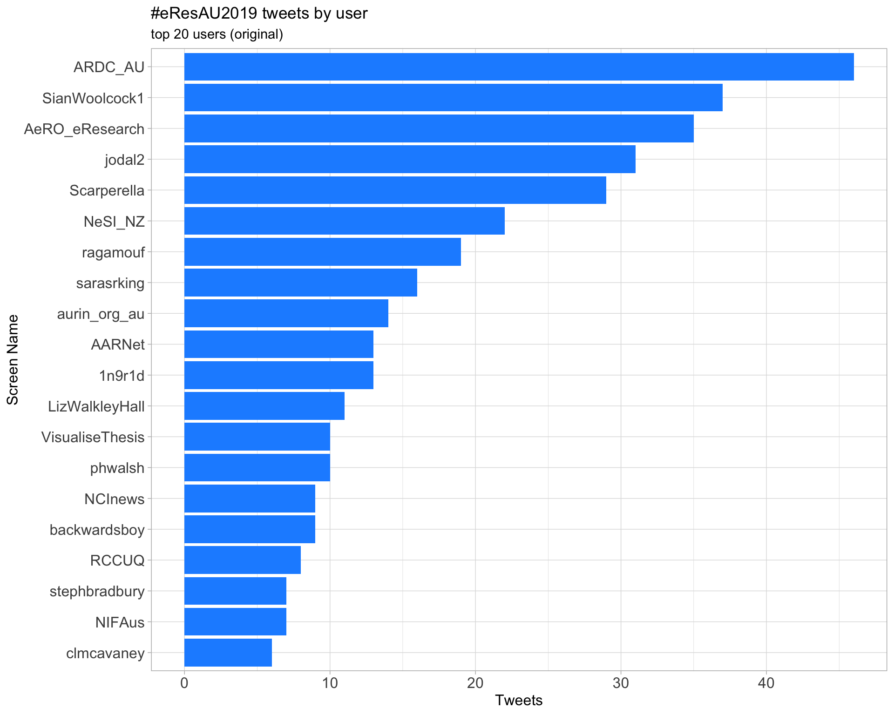
Retweets
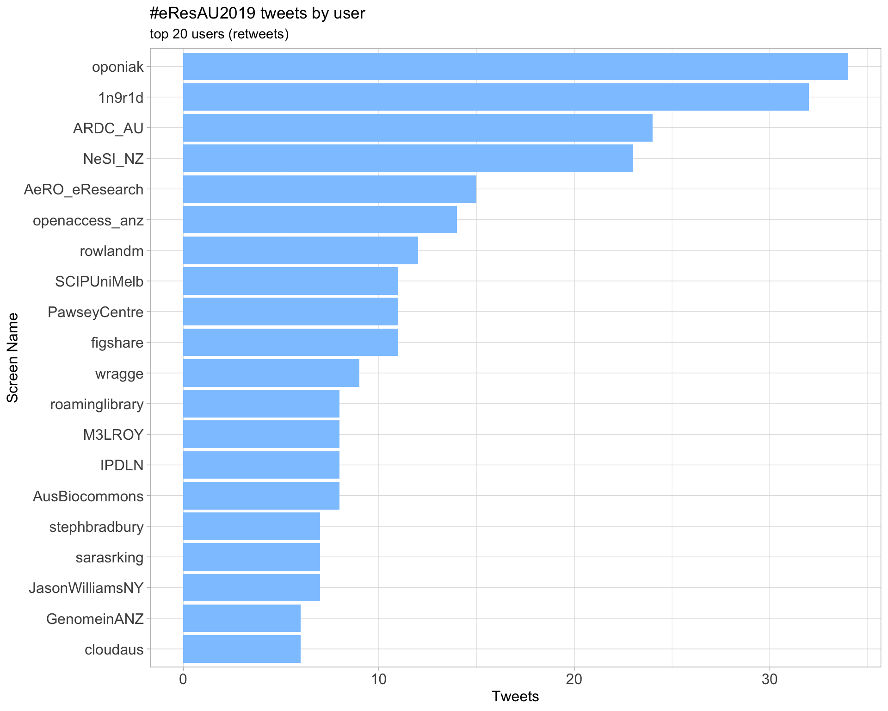
3.2 Retweet proportion
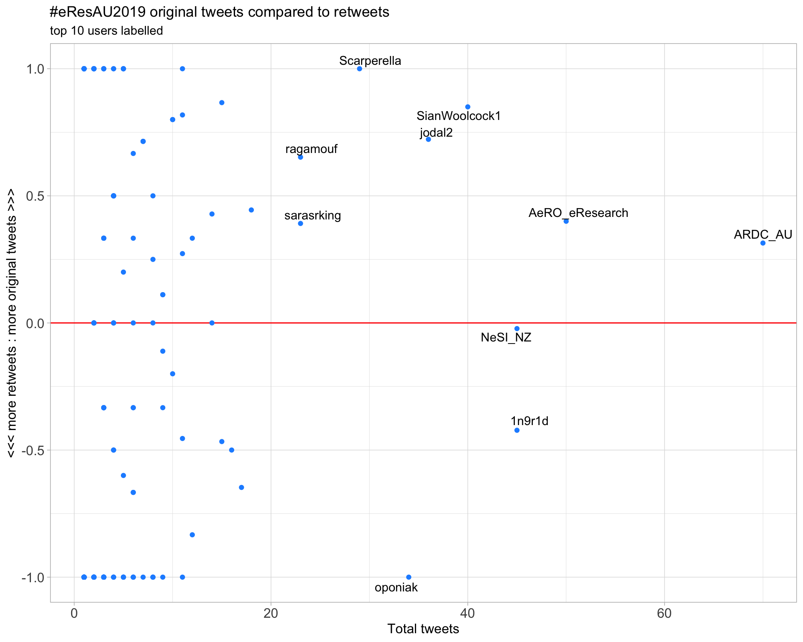
3.3 Top tweeters timeline
3.4 Top tweeters by day
Overall
Day 1
Day 2
Day 3
Day 4
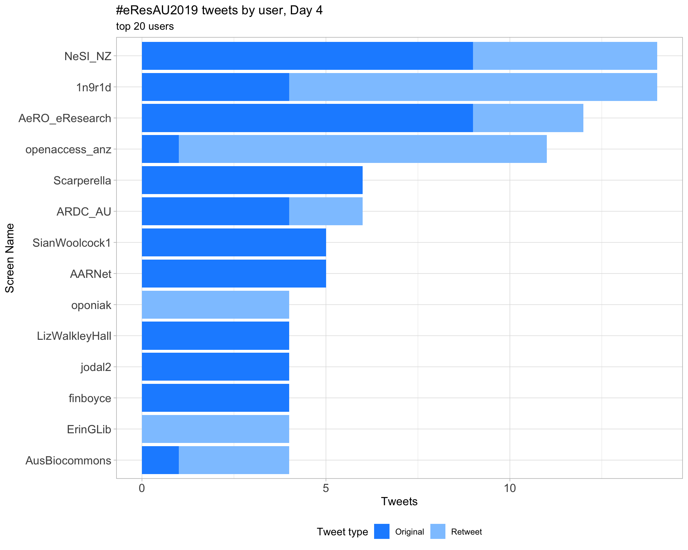
Day 5
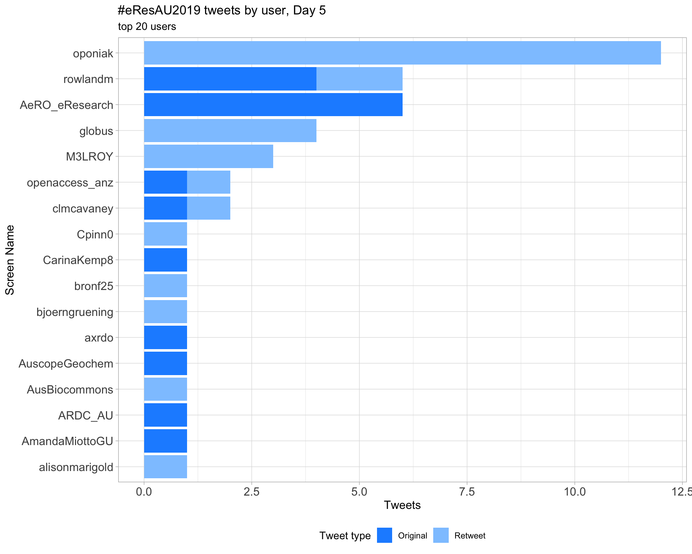
Original
Day 1
Day 2
Day 3
Day 4
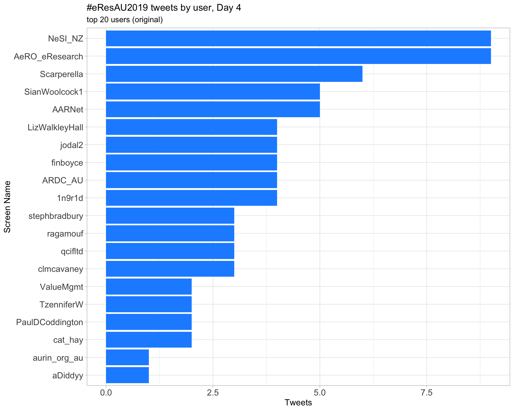
Day 5
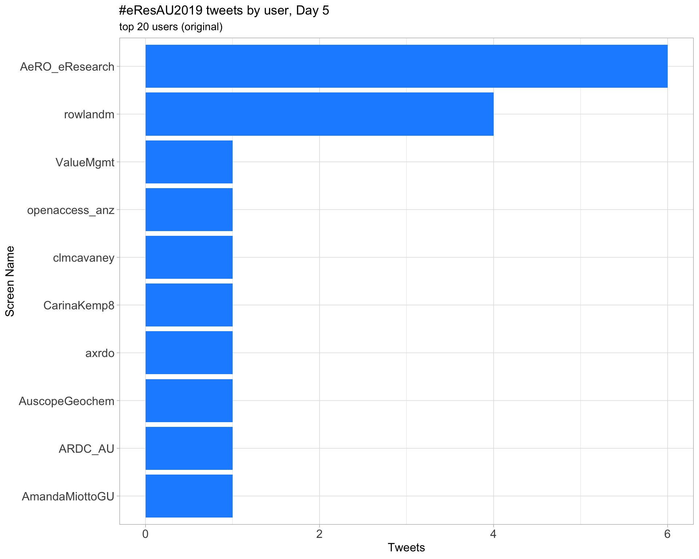
Retweets
Day 1
Day 2
Day 3
Day 4
Day 5
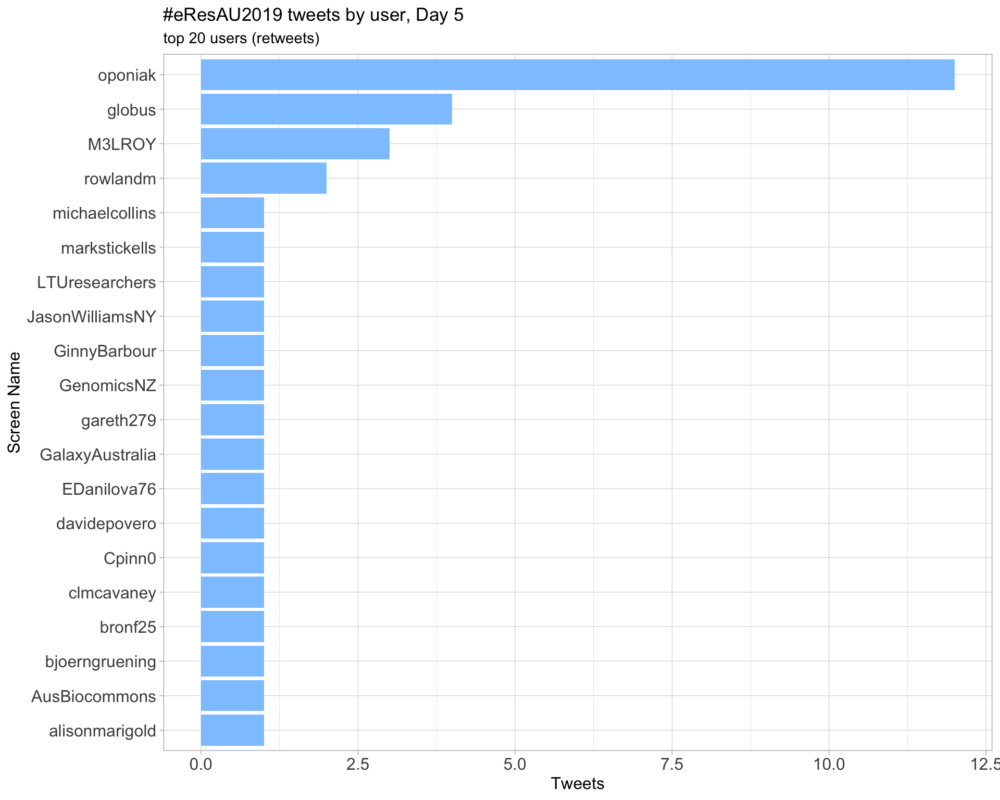
4 Sources
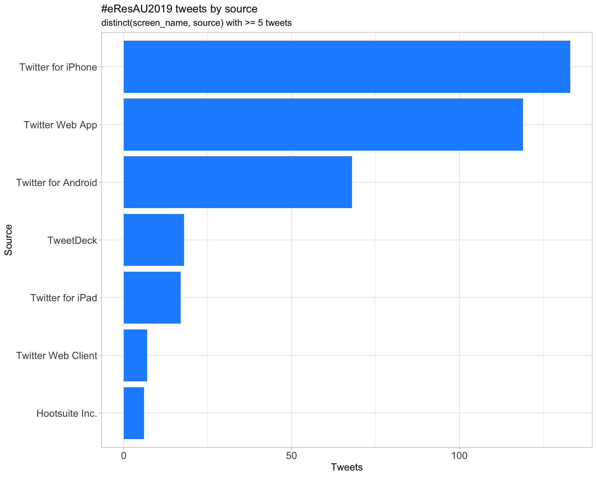
5 Networks
5.1 Replies
The “replies network”, composed from users who reply directly to one another, coloured by PageRank.
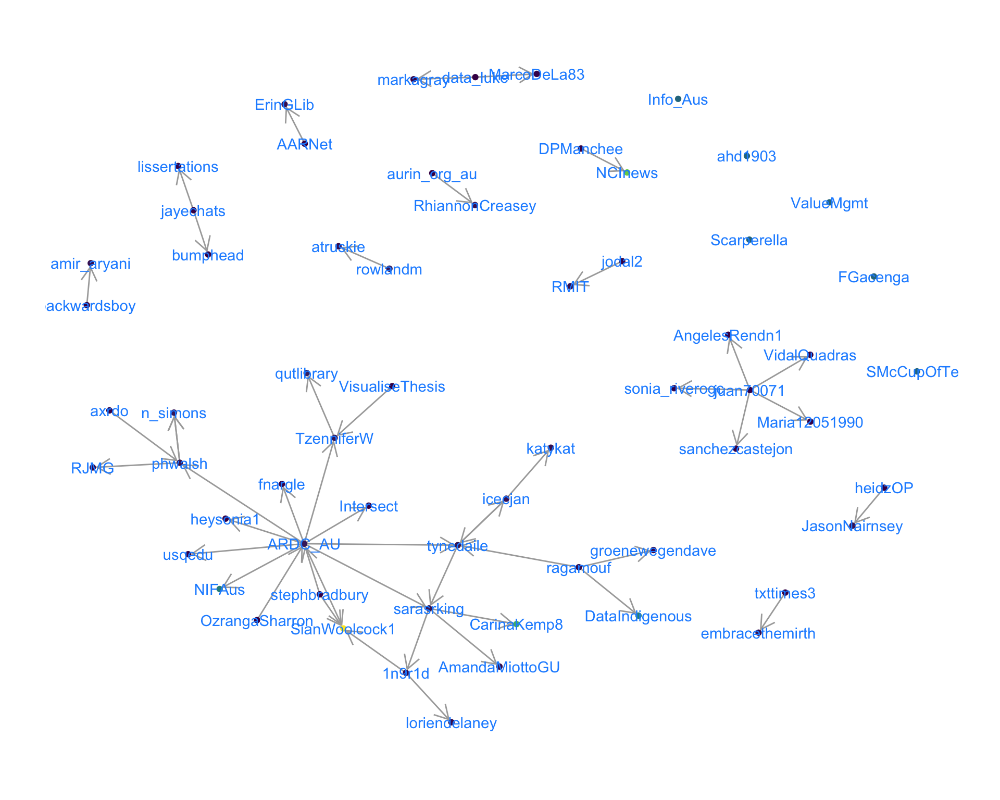
5.2 Mentions
The “mentions network”, where users mention other users in their tweets. Filtered for a k-core of 2. Node colour and size adjusted according to PageRank score.
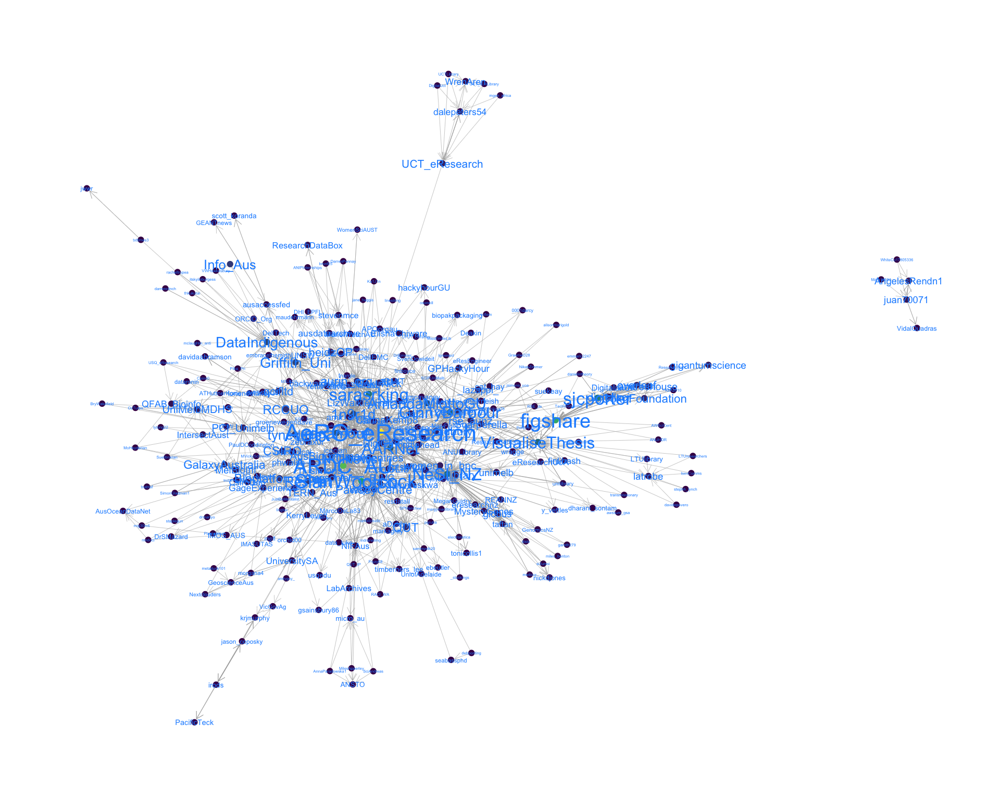
6 Tweet types
6.1 Retweets
Proportion
Count
Top 10
| screen_name | text | retweet_count |
|---|---|---|
| NCInews | The #eResAU2019 exhibition features something new: the NCRIS Avenue! Booths from nationally funded research infrastructure facilities from all over the country, all together right here. Now that’s some #NCRISImpact. https://t.co/iz34gV6kHe | 13 |
| SianWoolcock1 | “How to we make it easier for researchers to share their data? Policy isn’t enough. Combination of capabilty/ opportunity/ motivation is required.” Slide/presenter : Dr Michelle Kahe #eResAU2019 #OA #OpenData https://t.co/g5eC8B6Uyj | 12 |
| sjcporter | In preparation for our #eResAu2019 talk tomorrow on the physiome journal, here is a quick video on how we are integrating @figshare, @overleaf and @gigantumscience https://t.co/kcVdSB9MAG https://t.co/8GwkCFJuKd | 11 |
| sarasrking | Humanities session starting with Rere-No-A-Rangi Pope - “Ka mua, ka muri: Looking back in order to move forward.” By working with messy historical data, connecting families with their missing ancestors, we are walking backwards into the future. #eResAU2019 #digitalhumanities | 10 |
| 1n9r1d | Need a lot of data to do #MachineLearning - good for correlation but not causation; caution needed with biases in those datasets - Rosie Hicks from @ARDC_AU #eResAU2019 https://t.co/WYp4Pp2ifJ | 9 |
| figshare | Announcing the winners of ‘Visualise your thesis 2019’ at #eResAU2019 - see them all at https://t.co/IoTBoHCbjv #VYT2019 #VisualiseThesis https://t.co/0urAj4rkGV | 9 |
| AusBiocommons | What to know more about the Australian BioCommons? Hear all about this new @BioplatformsAus initiative today 4.30pm @AeRO_eResearch #eResAU2019. Assoc Director Dr Jeff Christiansen: Aus BioCommons - an exemplar of international engagement in research infrastructure #NCRISImpact | 8 |
| VisualiseThesis | üì¢ It‚Äôs finally here ü§©! The entries in the 2019 Visualise Your Thesis Competition are now live on @figshare ‚ú® ‚ñ∂Ô∏è Check out all the entries ahead of tomorrow‚Äôs announcement at #eResAu2019 ü•≥https://t.co/Fxh2HVlvbx #VYT2019 #VisualiseThesis | 8 |
| Info_Aus | Australia’s biggest financial and political transparency project using open data is at https://t.co/zeOK7eOawa #eResAU2019 | 8 |
| DataIndigenous | Prof Mark Finanane of @Griffith_Uni describing the Prosecution Project, digitalising, structuring and modelling Australia’s historical criminal data dataverse. #eResAU2019 #DataSummit #ARDC https://t.co/CHPIxwbnTO | 8 |
Most retweeted
6.2 Likes
Proportion

Count
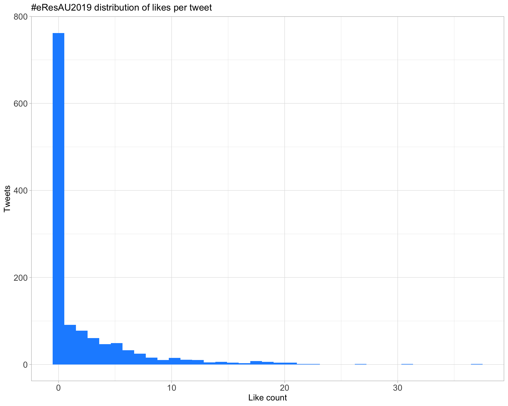
Top 10
| screen_name | text | favorite_count |
|---|---|---|
| clmcavaney | I brought my own keep cup, but #eResAU2019 has @biopakpackaging cups (coating made from plant based products - so recyclable) and also crockery this year. Making our conference more sustainable. @AeRO_eResearch https://t.co/SNLDLoqoT6 | 30 |
| n_simons | Awesome all women powerhouse panel at the Skills & Training BoF #eResAU2019 https://t.co/RYIhBNm6hT | 29 |
| SianWoolcock1 | “How to we make it easier for researchers to share their data? Policy isn’t enough. Combination of capabilty/ opportunity/ motivation is required.” Slide/presenter : Dr Michelle Kahe #eResAU2019 #OA #OpenData https://t.co/g5eC8B6Uyj | 26 |
| SianWoolcock1 | Do we need the ‘e’ in eResearch? Rosie Hicks at #eResAu2019 argues its just research. | 21 |
| VisualiseThesis | üì¢ It‚Äôs finally here ü§©! The entries in the 2019 Visualise Your Thesis Competition are now live on @figshare ‚ú® ‚ñ∂Ô∏è Check out all the entries ahead of tomorrow‚Äôs announcement at #eResAu2019 ü•≥https://t.co/Fxh2HVlvbx #VYT2019 #VisualiseThesis | 21 |
| sarasrking | Humanities session starting with Rere-No-A-Rangi Pope - “Ka mua, ka muri: Looking back in order to move forward.” By working with messy historical data, connecting families with their missing ancestors, we are walking backwards into the future. #eResAU2019 #digitalhumanities | 20 |
| sjcporter | In preparation for our #eResAu2019 talk tomorrow on the physiome journal, here is a quick video on how we are integrating @figshare, @overleaf and @gigantumscience https://t.co/kcVdSB9MAG https://t.co/8GwkCFJuKd | 20 |
| 1n9r1d | The last time I wore an inifinity symbol ‚àû on a T-shirt was when working in heritage digital preservation and archiving - this augurs well for research data @AARNet ! #eResAU2019 https://t.co/FS33zStuLP | 19 |
| TzenniferW | Welcome to country and blessing for #eResAU2019 https://t.co/SF620bDwHe | 19 |
| VisualiseThesis | Congratulations to our inaugural winner Annaclaire McDonald for ‘Fantastic Metals & Where to Phyt Them​’ from @UTSEngage at #eResAU2019 https://t.co/oCjjmVrTOK via @figshare #VYT2019 supported by @UTSlibrary #ChequeIsInTheMail | 19 |
Most likes
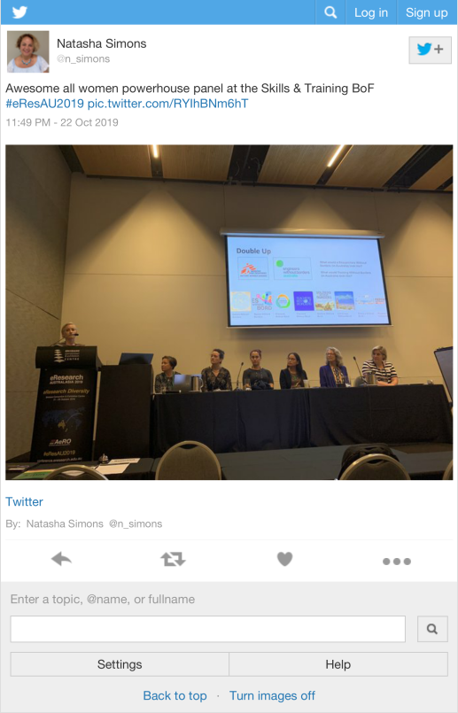
6.3 Quotes
Proportion
Count
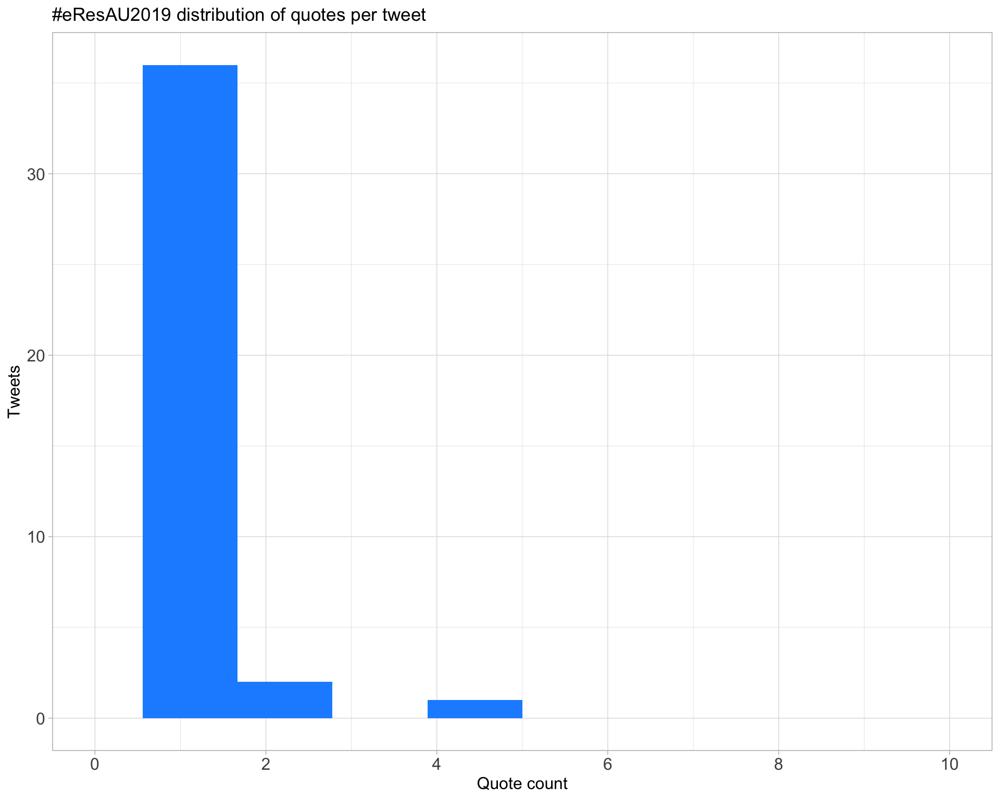
Top 10
| screen_name | text | quote_count |
|---|---|---|
| sjcporter | #eResAU2019 https://t.co/f5hpF0UDSh | 4 |
| digitalsci | One for the #eResAU2019 crowd! @sjcporter has also added a tweet with a link to the nifty interactive version. Check it out at @figshare’s booth or online! https://t.co/bE0X7ipSRR | 4 |
| overleaf | Our friend and colleague @sjcporter is showcasing what Australasian Research looks like at #eResAU2019 - created using @overleaf @figshare @gigantumscience and @dimensions. Pop by the @figshare booth to find out more or check out the interactive version - https://t.co/UnzK0bUWTY https://t.co/rrAhnIgwLm | 4 |
| VisualiseThesis | Adventures in visualisation @sjcporter is giving us a personal tour of his work at #eResAU2019 https://t.co/HAxwRX5jUP | 4 |
| unilibrary | Put on your dancing shoes, it‚Äôs Visualise Your Thesis Awards seasonüíÉTake a look at all this incredible research! #VYT2019 #VisualiseThesis #eResAu2019 https://t.co/lpcqg3TBR6 | 2 |
| FurEnough |
The International #VYT2019 comp is ON! So many excellent entries and fascinating research projects! Check them out in the gallery below and check out my entry here üêæhttps://t.co/SMMeP5kDB3 Waiting with bated breath for the announcement at #eResAu2019 tomorrow!üò¨ https://t.co/qQtvwBhuUy |
2 |
| TERN_Aus | Wonderful to be at the eResearch Australasia Conference! Drop by the TERN booth to find out how our NCRIS-enabled research infrastructure (data, research sites, virtual labs, data visualisation & publishing tools etc) can help you. Or just come say hi! #eResAU2019 #NCRISimpact https://t.co/LOwvAKqIQJ | 2 |
| ANFFHQ | NCRIS is being represented in style at #eResAU2019 – get in touch if you want to know more about what NCRIS is and how it enables ANFF to overcome barriers to research. #NCRISImpact https://t.co/QCPHpvCYyf | 2 |
| ragamouf | #eresAU2019 @tynedaile into the workshop discussion in funding incentives https://t.co/X78ZdUbzFM | 1 |
| AeRO_eResearch |
Great to see momentum building for #eResAU2019 #eReserach Australasia conference - looking forward to seeing you all there! https://t.co/RN3OBreDxD |
1 |
Most quoted
7 Media
Proportion
Top 10
| screen_name | text | favorite_count |
|---|---|---|
| clmcavaney | I brought my own keep cup, but #eResAU2019 has @biopakpackaging cups (coating made from plant based products - so recyclable) and also crockery this year. Making our conference more sustainable. @AeRO_eResearch https://t.co/SNLDLoqoT6 | 30 |
| n_simons | Awesome all women powerhouse panel at the Skills & Training BoF #eResAU2019 https://t.co/RYIhBNm6hT | 29 |
| SianWoolcock1 | “How to we make it easier for researchers to share their data? Policy isn’t enough. Combination of capabilty/ opportunity/ motivation is required.” Slide/presenter : Dr Michelle Kahe #eResAU2019 #OA #OpenData https://t.co/g5eC8B6Uyj | 26 |
| sjcporter | In preparation for our #eResAu2019 talk tomorrow on the physiome journal, here is a quick video on how we are integrating @figshare, @overleaf and @gigantumscience https://t.co/kcVdSB9MAG https://t.co/8GwkCFJuKd | 20 |
| 1n9r1d | The last time I wore an inifinity symbol ‚àû on a T-shirt was when working in heritage digital preservation and archiving - this augurs well for research data @AARNet ! #eResAU2019 https://t.co/FS33zStuLP | 19 |
| TzenniferW | Welcome to country and blessing for #eResAU2019 https://t.co/SF620bDwHe | 19 |
| MarcoDeLa83 | Thanks @aDiddyy and the whole @PawseyCentre team at #eResAU2019 for this awesome birthday cake!! üòçüòç https://t.co/Ussv8oIUYD | 18 |
| DataIndigenous | Prof Mark Finanane of @Griffith_Uni describing the Prosecution Project, digitalising, structuring and modelling Australia’s historical criminal data dataverse. #eResAU2019 #DataSummit #ARDC https://t.co/CHPIxwbnTO | 18 |
| 1n9r1d | Need a lot of data to do #MachineLearning - good for correlation but not causation; caution needed with biases in those datasets - Rosie Hicks from @ARDC_AU #eResAU2019 https://t.co/WYp4Pp2ifJ | 17 |
| LizWalkleyHall | Whenever we talk about the “research community” I’m reminded of this quote #eResAU2019 https://t.co/Zqy6cnp2uj | 17 |
7.1 Most liked image

8 Tweet text
8.1 Word cloud
The top 100 words used 3 or more times.
8.2 Bigram graph
Words that were tweeted next to each other at least 3 times.
8.3 Topic modelling
Top 10 words associated with 6 topics identified by LDA.
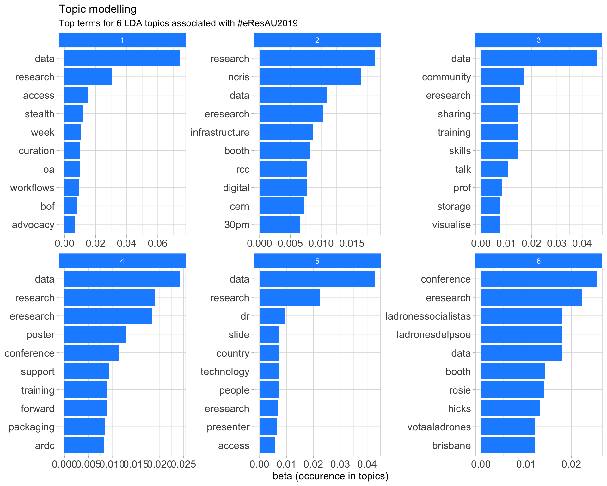
8.3.1 Representative tweets
Most representative tweets for each topic
Topic 1
| screen_name | text | gamma |
|---|---|---|
| RCCUQ | RCC eResearch Analyst @DoktrNick will present a talk with Loretta Davis of @AeRO_eResearch about the rapid growth of Hacky Hours & a national initiative to uplift eResearch support skills & encourage community-driven collaboration - at #eresAU2019 today (Wed 23 October) 2–2:20pm | 0.9952396 |
| TERN_Aus | Wonderful to be at the eResearch Australasia Conference! Drop by the TERN booth to find out how our NCRIS-enabled research infrastructure (data, research sites, virtual labs, data visualisation & publishing tools etc) can help you. Or just come say hi! #eResAU2019 #NCRISimpact https://t.co/LOwvAKqIQJ | 0.9948095 |
| AeRO_eResearch | .@AeRO_eResearch @retta_davis and @qcifltd @DoktrNick will be speaking on Building the #eResearch #Support Community – A National Initiative to Uplift eResearch Support Skills and Encourage Community-Driven Collaboration - 2pm B3 #eResAU2019 https://t.co/Hn9Maapu5Y | 0.9942940 |
| AARNet | Data packaging üì¶ and movement üì§üì• happens at varying points in research and data curation workflows. Come to the digital preservation and data packaging BoF at 11:40 in B2 convened by @bumphead @ptsefton @DigiGav @jayechats #eResAu2019 #OCFL #provenance #digipres #versions | 0.9942940 |
| FurEnough |
The International #VYT2019 comp is ON! So many excellent entries and fascinating research projects! Check them out in the gallery below and check out my entry here üêæhttps://t.co/SMMeP5kDB3 Waiting with bated breath for the announcement at #eResAu2019 tomorrow!üò¨ https://t.co/qQtvwBhuUy |
0.9939958 |
| AeRO_eResearch | Got a suggestion for the conference? Like to highlight something good? Drop by the #eResAU2019 conference feedback session - A2 12pm today! You can also complete the post-conference survey or email loretta@aero.edu.au #eResearch https://t.co/F6am6niPsc | 0.9936648 |
| GinnyBarbour | If you‚Äôre at #eResAU2019 go see @VisualiseThesis in poster area incl for announcement of winners tonight. I was one of the judges but no clues from me on who won ü§ê! All the entries are amazing but hope you‚Äôll agree the winners are particularly special. #VYT2019 #VisualiseThesis https://t.co/Rt86cf49TF | 0.9936648 |
| AmandaMiottoGU | Dr Elisha Chiware talking about the Multidisciplinary data infrastructure for South African Research: developing a workforce for a national data node @ElishaChiware #eResAU2019 https://t.co/W2lLcJKRks | 0.9932951 |
| VisualiseThesis | The countdown is on ‚Äì only 7 days to go till the VYT international announcement at #eResAU2019. With so many amazing entries our judges @GinnyBarbour @cameralibre @wragge are no doubt having a hard time picking a winner ü§îüéìüéâü•≥ #VYT2019 #TLDRyourThesis | 0.9932951 |
| backwardsboy | Can the #frbr model be applied in developing policy about when to mint #doi for evolving data or research activity? #eResAU2019 thanks @snet_jklump for bringing these together - research librarians love this. | 0.9928797 |
| TzenniferW | Training & skill building in eResearch: bringing the community together BoF session. ‘Go co’ & Training without borders -nice concepts. Collaboration & positive intent. #eResAU2019 https://t.co/0mmrxY5j0i | 0.9928797 |
| AARNet | @ErinGLib from @ANULibrary talking from a library technologist’s perspective : there is value in using research technologies and cloud infrastructure in research library practices with digital collections. #digipres #eResAu2019 https://t.co/OgYtYRBWYi | 0.9928797 |
| AARNet | A few places left at our Jupyter Jam workshop on Friday, with our #eResearch team @sarasrking @carinakemp8 @1n9r1d Alex Reid. Bring your coding and data munging tips and tricks to the session. #eResAu2019 ü§π‚Äç‚ôÄÔ∏èüíªü§πü躂Äç‚ôÇÔ∏è | 0.9928797 |
| CarinaKemp8 | ‘All researchers need to be able to access our fast network and the cloud infrastructure that sits on top. This is why AARNet is working in Data Curation with the research community’ ⁦@1n9r1d⁩ ⁦@AARNet⁩ #cloudstor #eResAU2019 https://t.co/HlYRKJJykK | 0.9928797 |
| aurin_org_au | Thank you Richard Ferras from @ARDC_AU great update on your successes with driving a community around gaining CoreTrustSeal Certification. Another element in the datasphere to support & enhance research impacts! #eResAU2019 @AeRO_eResearch https://t.co/tb99WWwY7s | 0.9928797 |
Topic 2
| screen_name | text | gamma |
|---|---|---|
| Scarperella | Diversity in Data, Tools, Users, and Impacts: the AURIN Journey. #eResAU2019 Australian Urban Research Infrastructure Network (AURIN) is the single largest e-Research resource for finding and accessing data and analytical tools related to the study of and planning for | 0.9954289 |
| AeRO_eResearch | #eResAU2019 keynote address Unlocking Scientific Discovery with a Confluence of Simulation, Modelling and Machine Learning @DellEMC APJ Chief Technology Officer, Supercomputing & Artificial Intelligence @hpc_geek + @zebrax0r Chief Technology Officer @RCCUQ @UQ_News https://t.co/NOe3Foa48h | 0.9952396 |
| sarasrking | Humanities session starting with Rere-No-A-Rangi Pope - “Ka mua, ka muri: Looking back in order to move forward.” By working with messy historical data, connecting families with their missing ancestors, we are walking backwards into the future. #eResAU2019 #digitalhumanities | 0.9950338 |
| RCCUQ | On now at #eResAU2019: RCC Director @davidaabramson will act as chair for a curated exhibitor session, featuring speakers from Amazon Web Services, Hewlett Packard Enterprise and Dell Technologies, 11:20am–12:40pm. | 0.9942940 |
| SianWoolcock1 |
In the last 10 years the Cost of compute and data storage has radically decreased but #DataVelocity, #DataVelocity and #ComputePerformance has concurrently radically increased. Slide/Presenter Andrew Underwood @DellEMC #eResAU2019 #eresearch https://t.co/goA4eMJ2mD |
0.9939958 |
| aurin_org_au | This week we are exhibiting @AeRO_eResearch #eResearch #Diversity Opening remarks by Prof. Matthew Bellgard the 5 Vs of data act as the gravity in the #eResearch universe…. love this! Looking forward to more insights from our community this week!#eResAU2019 https://t.co/9aYCCt0yMR | 0.9939958 |
| GinnyBarbour | Great to hear about @AeRO_eResearch eResearch Champions program with founding Champions @DoktrNick @AmandaMiottoGU üôÇ Should we be including OA skills in these? @GPHackyHour is aiming to cover wide range of such skills. Clearly a huge demand. https://t.co/RIVV6YDudX #EResAU2019 | 0.9936648 |
| DataIndigenous | Prof Mark Finanane of @Griffith_Uni describing the Prosecution Project, digitalising, structuring and modelling Australia’s historical criminal data dataverse. #eResAU2019 #DataSummit #ARDC https://t.co/CHPIxwbnTO | 0.9936648 |
| ahd1903 | Second talk for #eResAU2019’s #SmartCities #BOF: Michael Rigby from @aurin_org_au about “The Australian Urban Research Infrastructure Network (AURIN) provides access to data and tools for researchers and policy makers across Australia.” | 0.9936648 |
| katykat | You can access Dr Michelle Krahe’s paper here: Research data management in practice - Michelle A Krahe, Julie Toohey, Malcolm Wolski, et al https://t.co/9eOd3dwXbv #eResAu2019 | 0.9932951 |
Topic 3
| screen_name | text | gamma |
|---|---|---|
| AeRO_eResearch | Solution Showcases on now! #eResAU2019 1. #GSKY scalable standards compliant #data service, Nigel Rees 2. National federated p’form connecting primary & secondary care data for health services #research, Javier Haurat 3.SmartFarm Data Mgmt, Kieran Murphy https://t.co/TFT4Y8QZio | 0.9960564 |
| gsainsbury86 | Interesting view pt on #data #breach from Prof. Keith McNeil from QLD Health. “No one ever died from breach of privacy, lots of people have died from poor info sharing” #eResAU2019 I agree in principle but huge potential value in that data to bad actors - ins. companies etc. | 0.9957658 |
| aurin_org_au | Cracking start to day two @AeRO_eResearch #eResAU2019 Come & see our Director Dr Jane Hunter talk about the Diversity of Data that the #AURINWorkbench offers researchers. Then Dr Michael Rigby will be speaking about developing our water & energy data! See you there! https://t.co/CSYhwa63QZ | 0.9948095 |
| qcifltd | Visit the QCIF booth at #eResAU2019. Talk to the QCIF, @RCCUQ &/or @QFAB_Bioinfo staff, pick up some merchandise (good quality tea towels & screen/lens cloths) & enter our door prize. üòÄüéÅüéÅüéÅ https://t.co/MpdOkbtDKA | 0.9939958 |
| RCCUQ | Visit the QCIF booth at #eresAU2019 and pick up our MeDiCI data fabric tea towels and CAMERA lens cloths. Enter the door prize too ‚Äî @qcifltd goes to great lengths to come up with these guessing games. üòâ https://t.co/UvHr3agWo6 | 0.9939958 |
| NeSI_NZ | Data movement BoF - NeSI’s Nick Jones @nickdjones & Brian Flaherty @taftan w/ @globus’s Kyle Chard talking data mgmt, access & platforms. #eResAU2019 https://t.co/zg7Hwthi5F | 0.9936648 |
| SianWoolcock1 | Should add that I quietly spoke with the presenter afterwards & she without question agreed it was insensitive & said she would remove immediately & not use again. Just a reminder to us all to remember the unintentional impact of our content / data. Care essential. #eResAu2019 | 0.9932951 |
| AeRO_eResearch | Enjoyed #eResAU2019? Come to #C3DIS Collaborative Conference on Computational and Data Intensive Science - 16-20 March in #Melbourne https://t.co/ohYfdPiUDJ #eResearch #datascience #data #hpc https://t.co/FI6aAKmPv8 | 0.9928797 |
| VisualiseThesis | 2nd place winner #VYT2019 Congratulations to Donovan Garcia-Ceron from @LaTrobe with ‘Exploring Extracellular Vesicles From Plant Fungal Pathogens’​ https://t.co/742OdHK7IF via @figshare at #eResAU2019 supported by @LTUlibrary | 0.9928797 |
| APOorgau | Keith McNeil (QLD Health) speaking about the critical role of information sharing in innovation and improving outcomes. APO is proud to be playing its part! #eResAU2019 https://t.co/5awBLS1nQM | 0.9928797 |
| ahd1903 | This WESC standard is from Michael Rigby’s full dress #eResAU2019 presentation earlier today https://t.co/eWRkezlNNh - lots of new consumers and producers of energy, water data, this is trying to bring order to the chaos. | 0.9928797 |
Topic 4
| screen_name | text | gamma |
|---|---|---|
| RCCUQ | At #eResAU2019 today (Tues, 22 Oct), RCC Software Developer Zane van Iperen will discuss his work on embedded Nimrod at 4:10pm–4:30pm, & RCC Director @davidaabramson (below) will discuss CAMERA, RCC’s new framework to simplify digital instrument-based research, at 5:10pm–5:30pm. https://t.co/SZnuNIsJni | 0.9959163 |
| RCCUQ | At #eResAU2019 today? Note these RCC talks: 12:05–12:50pm, @zebrax0r & @DellTech: #HPC Wiener for #imaging & #MachineLearning. 4:10–4:30pm, Zane van Iperen: embedded Nimrod. 5:10–5:30pm, @davidaabramson: CAMERA, a framework to simplify digital instrument-based research. https://t.co/0zvpHsb6th | 0.9954289 |
| NeSI_NZ | .@ARDC_AU CEO @RJMG speaks to some current challenges around data… gaps in skilled workforce; working with sensitive data; community agreement around trusted data; access to non-research data. We need frameworks for sharing comms around these challenges more widely #eResAU2019 https://t.co/f61qLNH8KG | 0.9952396 |
| RCCUQ | 3 RCC-sponsored #UQ Graduate Digital Research Fellows - Aparna Gopal, Louise Martin-Chew & Dilrabo Tosheva - will present their projects as lightning talks at #eResAU2019 today (Wed, 23 Oct), 12-12:40pm. https://t.co/dEKacZMxqK @dataronin | 0.9948095 |
| AeRO_eResearch | #eResAU2019 #diversity breakfast guest speaker @women_in_hpc Toni Collis highlighting practical aspects and activities to encourage #diversity and #inclusion across the #eResearch sector #DiversityDividend #GlobalOutputIncrease #MultiCultural #Team #Performance https://t.co/a7MUFNWwcj | 0.9945639 |
| qcifltd | New QCIF staffer @heidzOP will present a talk at #eResAU2019 today (Tues 22 Oct), 4:10–4:30pm, about the impact of access to sensitive administrative data for research using @Griffith_Uni’s Social Analytics Lab (where she worked previously) as a case study. https://t.co/DHXJ0WfzuS | 0.9939958 |
| SianWoolcock1 | “How to we make it easier for researchers to share their data? Policy isn’t enough. Combination of capabilty/ opportunity/ motivation is required.” Slide/presenter : Dr Michelle Kahe #eResAU2019 #OA #OpenData https://t.co/g5eC8B6Uyj | 0.9939958 |
| AusBiocommons | Today’s contribution to @AeRO_eResearch #eResAU2019 includes Training Manager Dr Christina Hall sharing our ‘Hybrid Training: a new scalable model for delivering dispersed bioinformatics training’ at 12.20pm #NCRISImpact | 0.9939958 |
| Scarperella | #eResAU2019 How to run a cost-effective graduate researcher training service from Research Platform Services Uni of Melb. So many choices for tools…Demand for assistance to big for ticketing systems…. https://t.co/MUQ5TnAu2f | 0.9939958 |
| ausaccessfed | AAF CEO Heath Marks and COO Princess Leia (aka Elleina Filippi) present a decade of learnings on enabling research access #eResAU2019 #maytheforcebewithyou #NCRISimpact https://t.co/flV23Ue8sI | 0.9936648 |
Topic 5
| screen_name | text | gamma |
|---|---|---|
| TERN_Aus | Morning #eResAU2019! Interested in data on the üá¶üá∫ #environment? Or ‚òÅÔ∏è-based tools for data analysis? Data visualisation? Virtual desktops? Drop by the TERN booth & learn how our free data & services can help you. Or just say hi to this friendly bunch! üòÉ #NCRISimpact #ESAus19 https://t.co/YzkgvZZbtD | 0.9950338 |
| SianWoolcock1 |
According to Carmel Woods, her institutional challenges for introducing open and responsible data stewardship include overcoming a culture of ‚Äòmy data‚Äô versus ‚Äòour data‚Äô. Sound familiar anyone? üòä #eResAU2019 #RDM #ResearchDataManagement Slide/presenter: Carmel Woods https://t.co/ueB3IqEnnv |
0.9950338 |
| leila2013m | What the top data related skills are? Data conceptualisation, Data curation, prep &cleansing, data communications, data compliance: FAIR, de-identifying , data visualisation an interesting discussion at #eResAU2019 . https://t.co/sML4x0Zbum | 0.9945639 |
| aurin_org_au | Thank you @stevenmce Great to see the lengths @ausdataarchive are going to for researchers to gain access to valuable ABS data. We’re pleased to have historic census data available on the #AURINWorkbench & look forward to growing data availability in the coming years! #eResAU2019 https://t.co/LZgDl2HTSO | 0.9945639 |
| sarasrking | Visualise Your Thesis competition presentation this afternoon - a way to gain valuable skills not nec part of the trad HDR experience + polished public engagement tool = WIN WIN! #eResAU2019 https://t.co/tzRLKf1uyt | 0.9939958 |
| SianWoolcock1 |
#UniSA on-prem data storage solution provides a cloud based experience without the cloud. Secure Data sharing with external colloburators also possible. #eResAu2019 #ResearchDataStorage #ResearchDataManagement #NextCloud https://t.co/SPQH8atxde |
0.9936648 |
| leila2013m | Prof Neil McNiel summarised how health system could move from data to decisions to not only diagnose and treat diseases but also to predict and prescriptive it. An impressive key note at #eResAu2019 https://t.co/YGEjvn0TgH | 0.9936648 |
| SianWoolcock1 |
What can developers do to create #SustainableSoftware? Version control & documentation, use commonly used languages, frameworks, containerisation, #APIs, iterative development Slide/Presenter: Heidi Perrett #eResAU2019 https://t.co/QGNDS29IrF |
0.9936648 |
| loriendelaney | The struggle to anticipate possible future uses of data when obtaining participant consent…recurring theme at today’s animated discussion on sensitive data led by Ingrid Mason @1n9r1d at #eResAU2019 | 0.9932951 |
| SianWoolcock1 |
Top tip for webinars - have a separate person on chat - this is important for a genuine interactive experience. #eResAU2019 #UX Slide/presenter Leonie Sherwin @usqedu https://t.co/5OIzDHbCF5 |
0.9928797 |
Topic 6
| screen_name | text | gamma |
|---|---|---|
| TERN_Aus | At #eResAU2019 this week? Don’t miss TERN’s Dr Siddeswara Guru’s Birds of a Feather session on national coordination in spatial info. Wed 23/10 15:00. Guru will then chair an exciting life sciences session at 16:10–17:30. See you there! https://t.co/tXtrdAbHqB @RCCUQ #NCRIS https://t.co/L4XpQzXMqH | 0.9950338 |
| DigiGav | Hard to find the right moment in Jakub “Kuba” Moscicki’s keynote talk, but this one compares finding Higgs Boson events from CERN’s LHC data to finding the right needle in the right haystack when you are generating 25 million haystacks per second. #eresau2019 https://t.co/rtYnruaGp2 | 0.9948095 |
| 1n9r1d | Apt @britishlibrary held symposium on digital scholarship occurring within research libraries “to discuss areas of potential cross-sector and interdisciplinary collaboration, and the routes and networks through which this might be achieved.” as we traversed workflows #eResAu2019 https://t.co/AG0frxvOW6 | 0.9945639 |
| AARNet | Head to the auditorium this morning at 10:10 to hear a lightning talk on key lessons learned exploring research library curation digitisation and data processing workflows using our #CloudStor and Jupyter service via @1n9r1d https://t.co/I9rigrWNNN #eResAu2019 | 0.9945639 |
| NeSI_NZ | Nick Jones: Is there an opportunity to think about how we connect across the Tasman to provide 1st class data workflows — sharing lessons learned & leveraging high quality base infrastructures and service layers #eResAU2019 @globus https://t.co/U0rJBrTdRw | 0.9942940 |
| unilibrary | .@VetPracticeMag How can we better protect pets? @FVASunimelb #researcher + @unimelb #VYT2019 winner Carmen Glanville points to changing people → https://t.co/qv9VHT0xVK Good luck to Carmen in international round of the @VisualiseThesis held at #eResAu2019 next week … | 0.9939958 |
| DrIdoBar | What does a couple of data geeks do with their 3mo baby for their wedding anniversary? Go to #eResAu2019 üë©‚Äçüíªü뮂Äçüíª I‚Äôll be at the babysitter role today, so say hi if you see a red pram around (and a bold daddy with baby with a full head of hair).‚Ŷ@heidzOP‚Å© https://t.co/WN6id9ET44 | 0.9939958 |
| NeSI_NZ | NeSI’s Research Communities Advisor, Nooriyah Lohani @MysteryGenes, sharing insights from consultations with NZ researcher community leaders to better understand their needs. Recap report available on @figshare: https://t.co/Q9y18PgoZh #eResAU2019 https://t.co/0I2WdLutu7 | 0.9939958 |
| leila2013m | Just shared Flinders OA week great programs planned by CRSL team in a OA advocacy workshop facilitating by @GinnyBarbour at #eResAu2019 I am quackers for OA. ping @LizWalkleyHall @MaryFilsell @K1Howard @FlindersLib @ppandey007 https://t.co/5INhlopPJr | 0.9936648 |
| AusBiocommons | What to know more about the Australian BioCommons? Hear all about this new @BioplatformsAus initiative today 4.30pm @AeRO_eResearch #eResAU2019. Assoc Director Dr Jeff Christiansen: Aus BioCommons - an exemplar of international engagement in research infrastructure #NCRISImpact | 0.9936648 |
9 Software
Software mentioned in Tweets with links to GitHub, BitBucket, Bioconductor or CRAN.
Session info
## R version 3.6.0 (2019-04-26)
## Platform: x86_64-apple-darwin15.6.0 (64-bit)
## Running under: macOS Mojave 10.14.6
##
## Matrix products: default
## BLAS: /Library/Frameworks/R.framework/Versions/3.6/Resources/lib/libRblas.0.dylib
## LAPACK: /Library/Frameworks/R.framework/Versions/3.6/Resources/lib/libRlapack.dylib
##
## locale:
## [1] en_AU.UTF-8/en_AU.UTF-8/en_AU.UTF-8/C/en_AU.UTF-8/en_AU.UTF-8
##
## attached base packages:
## [1] stats graphics grDevices utils datasets methods base
##
## other attached packages:
## [1] fs_1.3.1 here_0.1 knitr_1.25
## [4] magick_2.2 webshot_0.5.1 viridis_0.5.1
## [7] viridisLite_0.3.0 wordcloud_2.6 RColorBrewer_1.1-2
## [10] ggraph_2.0.0 ggrepel_0.8.1 ggplot2_3.2.1
## [13] topicmodels_0.2-8 tidytext_0.2.2 igraph_1.2.4.1
## [16] stringr_1.4.0 purrr_0.3.3 forcats_0.4.0
## [19] lubridate_1.7.4 tidyr_1.0.0 dplyr_0.8.3
## [22] rtweet_0.6.9
##
## loaded via a namespace (and not attached):
## [1] httr_1.4.1 tidygraph_1.1.2 jsonlite_1.6
## [4] assertthat_0.2.1 askpass_1.1 highr_0.8
## [7] stats4_3.6.0 yaml_2.2.0 progress_1.2.2
## [10] slam_0.1-45 pillar_1.4.2 backports_1.1.5
## [13] lattice_0.20-38 glue_1.3.1 digest_0.6.22
## [16] polyclip_1.10-0 colorspace_1.4-1 plyr_1.8.4
## [19] htmltools_0.4.0 Matrix_1.2-17 tm_0.7-6
## [22] pkgconfig_2.0.3 scales_1.0.0 processx_3.4.1
## [25] tweenr_1.0.1 ggforce_0.3.1 tibble_2.1.3
## [28] openssl_1.4.1 generics_0.0.2 farver_1.1.0
## [31] ellipsis_0.3.0 withr_2.1.2 lazyeval_0.2.2
## [34] cli_1.1.0 NLP_0.2-0 magrittr_1.5
## [37] crayon_1.3.4 ps_1.3.0 evaluate_0.14
## [40] tokenizers_0.2.1 janeaustenr_0.1.5 fansi_0.4.0
## [43] SnowballC_0.6.0 MASS_7.3-51.4 xml2_1.2.2
## [46] tools_3.6.0 prettyunits_1.0.2 hms_0.5.1
## [49] lifecycle_0.1.0 munsell_0.5.0 callr_3.3.2
## [52] compiler_3.6.0 rlang_0.4.0 grid_3.6.0
## [55] labeling_0.3 rmarkdown_1.16 gtable_0.3.0
## [58] curl_4.2 reshape2_1.4.3 graphlayouts_0.5.0
## [61] R6_2.4.0 gridExtra_2.3 utf8_1.1.4
## [64] zeallot_0.1.0 rprojroot_1.3-2 modeltools_0.2-22
## [67] stringi_1.4.3 parallel_3.6.0 Rcpp_1.0.2
## [70] vctrs_0.2.0 tidyselect_0.2.5 xfun_0.10